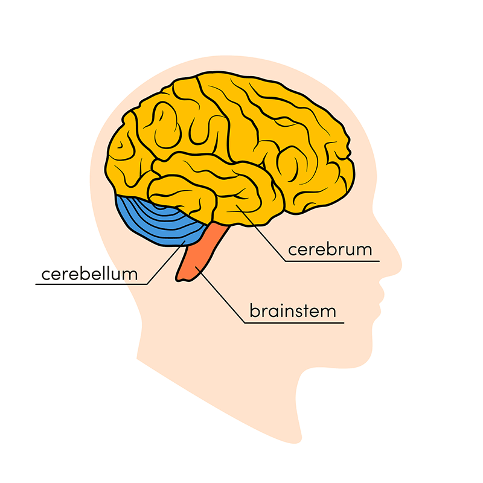
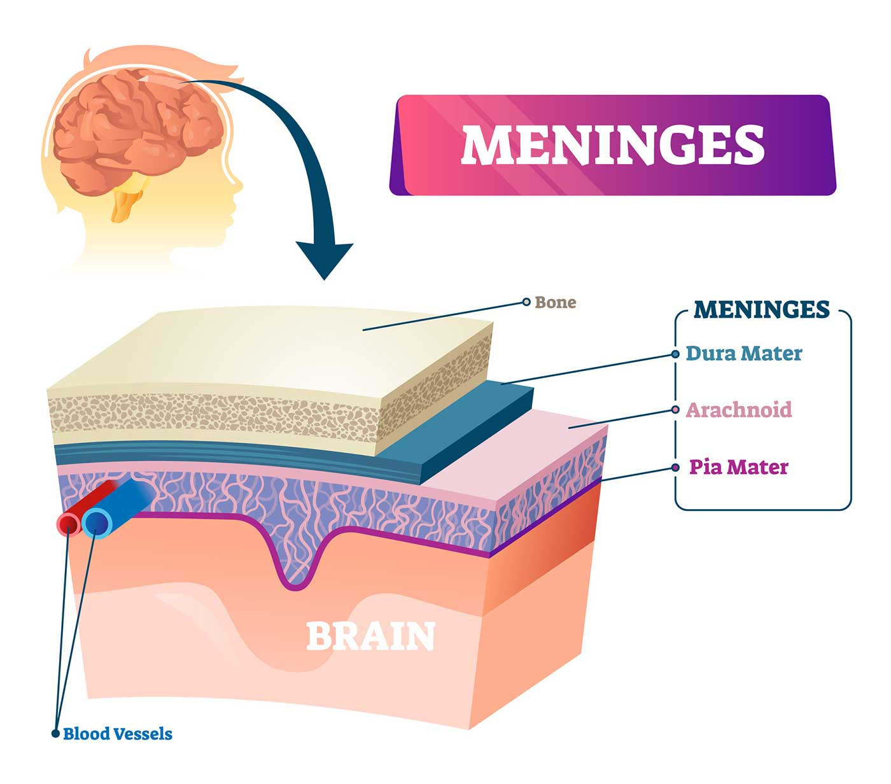
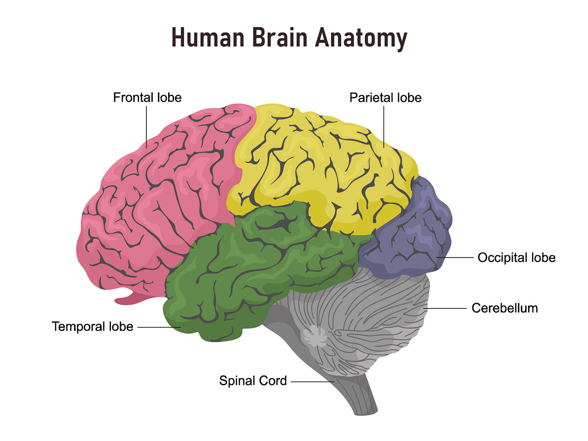
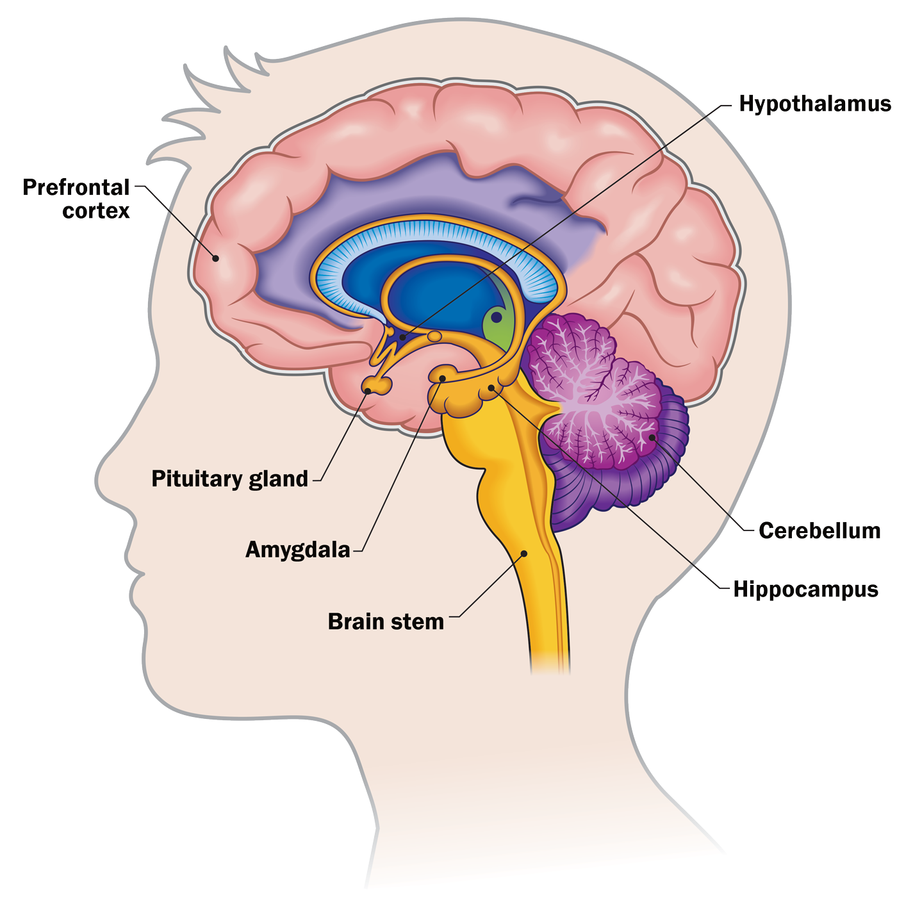
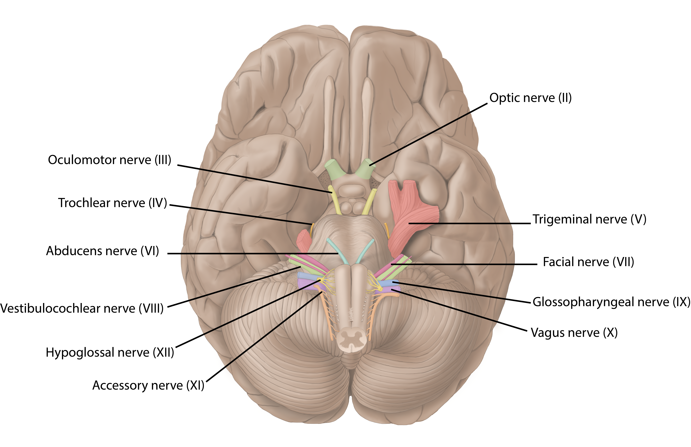

ㅤ
The brain is a complex organ responsible for most of the functions of the body, and "commanding" the rest of the body. It receives and sends chemical and electrical signals throughout the body. It is made 60% of fat, and the rest (40%) is composed of water, protein, carbohydrates, and salts. And it contains mainly blood vessels and nerves. It is split into two main regions: the gray and white matter. Gray matter is the outer layer, and is made of neuron somas. It mainly processes and interprets information. White matter is the inner layer, and is made of axons wrapped in myelin. It transmits the information from the gray matter to the rest of the nervous system.
ㅤ

The cerebrum is made of white matter in the center with a gray matter cover called the "cerebral cortex". The cerebral cortex makes up about half of the brain's weight, it is split into two main hemispheres. The right hemisphere controls the left side of the body, and the left hemisphere controls the right side of the body. They are able to communicate through a C-shaped structure called the "corpus callosum". The cerebrum is responsible for many actions such as (but not limited to): initiating and creating movement for the rest of the body, regulating the body's tempurature, enabling speech, judgment, thinking and reasoning, problem-solving, emotions, and learning.
The brainstem connects the spinal cord and cerebrum together, and is composed of three parts: the midbrain, pons, and medulla. The midbrain helps with hearing, movement, calculating responses, and environmental changes. It also contains the substansia nigra which helps with movement and coordination. The pons is a structure that contains four of the twelve cranial nerves which help with activities like tear production, chewing, blinking, focusing vision, balance, hearing and facial expression. It is the connection between the midbrain and the medulla. The medulla is the area where the brain connects with the spinal cord. It also helps regulate body activities, including heart rhythm, breathing, blood flow, and oxygen and carbon dioxide levels. It is also responsible for reflexive activities such as sneezing, vomiting, coughing, and swallowing.
The cerebellum is responsible for coordinating voluntary muscle movements and mainting both posture and balance. It also contributes to thoughts, emotions, and social behaviour. Similar to the cerebral cortex the cerebellum has two hemispheres. The outer hemisphere has many neurons, and the inner area communicates with the cerebral cortex.
ㅤ

The meninges are three layers surrounding the brain and spinal cord that help with various things.
It is thick and tough, and is split into two layers. The periosteal layer of the dura mater lines the inner dome of the skull, and the meningeal layer is below that.
It is a thin "web-like" layer of connective tissue without nerves or blood vessels. Right below it is the cerebrospinal fluid (CSF). The CSF acts like cushioning for the entire central nervous system, and it continually circulates around these structures to wash out waste and impurities and deliver nutrients.
It is a thin layer that lays on the surface of the brain and follows its contours. It has many veins and arteries.
ㅤ

It is the largest lobe, and is mostly responsible for personality characteristics, decision-making, and movement. It also helps with things like recognition of smells. It also contains the "Broca's Area", which helps with speech.
It helps with identifying objects and spatial awareness (spatial relationships), it also helps with touch and pain. It also contains the Wernicke's Area which helps with the understanding of spoken languages.
It is responsible for many things relating to vision, such as visual perception.
There are two temporal lobes, and they're responsible for short-term memory, speech, musical rhythm and some degree of smell recognition.
ㅤ

It is very small at about the size of a pea. It is in charge of the functions of the other glands throughout the body along with regulating the flow of hormones from the thyroid, adrenals, ovaries and testicles. It receives chemical signals from the hypothalamus through its stalk and blood supply.
It sends the pituitary gland chemical messages to control its function. It regulates body temperature, synchronizes sleep patterns, controls hunger and thirst and also plays a role in some aspects of memory and emotion.
They are small, one is located under each hemisphere of the brain. Included in the limbic system, the amygdalae regulate emotion and memory and are associated with the brain's reward system, stress, and the “fight or flight” response when someone perceives a threat.
They are strangely shaped, one is located under each temporal lobe. It is a part of the hippocampal formation, It supports memory, learning, navigation and perception of space. It receives information from the cerebral cortex and may play a role in Alzheimer's disease.
It is deep within the brain, it is attached by a stalk to the top of the third ventricle. It responds to light and dark and secretes melatonin, which regulates circadian rhythms and the sleep-wake cycle.
The ventricles are deep within the brain. They are four open areas that have passageways between them, and they also open into the central spinal canal and the area beneath the arachnoid layer of the meninges. These ventricles produce CSF.
ㅤ

It allows for smell
It is in charge of eyesight
It controls motions of the eyes and pupil response
It controls the eye muscles
It is the largest nerve, it controls sensory and motor function.
It gives nerves to some of the muscles in the eye.
It helps with movement of the face, taste, and glandular functions.
It helps with balance and hearing.
It allows for taste, ear and throat movement, and more functions.
It helps with sensation around the ear and the digestive system and controls motor activity in the heart, throat and digestive system.
It innervates specific muscles in the head, neck and shoulder.
It helps with the motor activity of the tongue.